Intel SGX（Software Guard Extensions）速记
SGX的作用
SGX使得应用程序在一段位于Enclave地址空间中能够开辟一段受保护的内存空间。这段受保护空间实行严格的访问控制和加密操作来提供对程序数据机密性和代码完整性的保护，使得即使是Hypervisor、BIOS，操作系统等特权应用都不能随意访问这段地址空间
SGX的启用
SGX support can be checked by executing the CPUID instruction with the Structured Extended Feature Leaf flag set, and checking if the second bit of the EBX register is set. To be able to use SGX, it must have been enabled by BIOS, and only a few BIOSes actually support this technology. That is one of the reasons it is not widely used.
Enclave
在Intel SGX（Software Guard Extensions）中，Enclave是一个受硬件保护的安全执行环境（Trusted Execution Environment, TEE）。Enclave是一个运行环境的概念，但它也可以被视为一个程序实体的逻辑单元，因为它承载了特定的代码和数据，并在运行时提供隔离和保护。
程序在编译时会被被分为non-secure和secure part (运行在enclave中)。当调用enclave function时，程序会进入enclave环境，只有enclave中的代码可以访问enclave中数据。

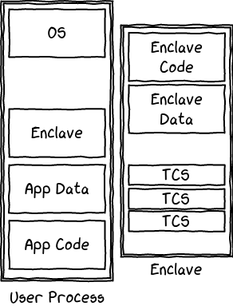
一个代码的例子
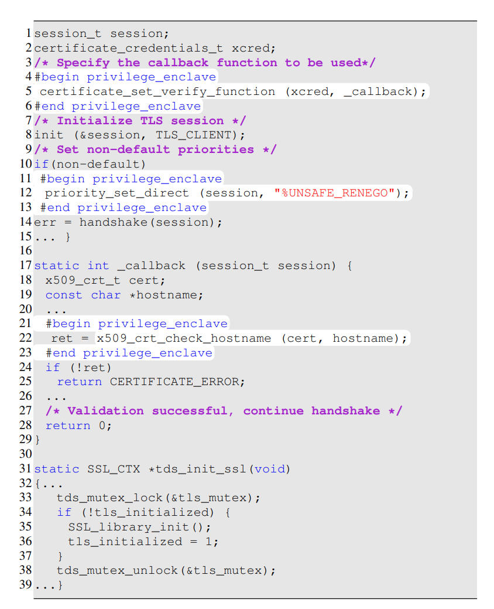
INTEL SGX指令
ring0支持左边8个指令，ring3支持右边五个指令。
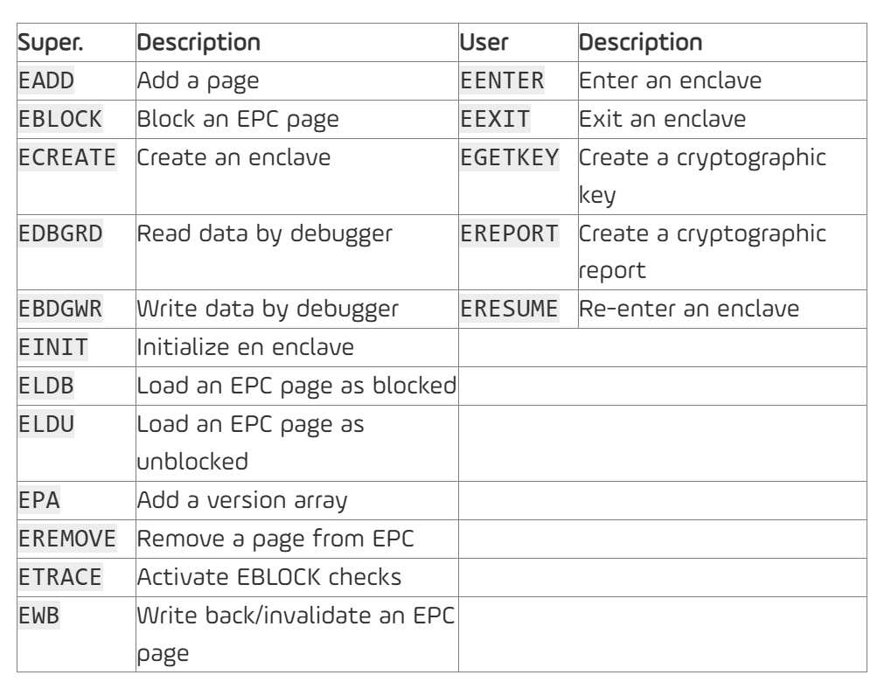
内存中的关键概念
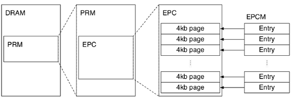
PRM (Preserved Random Memory)
- 是DRAM中一段连续的保留内存区域
- 位于最低的BIOS层
- 不能被任何普通软件直接访问
EPC (Enclave Page Cache)
- 是PRM中的一部分
- 由操作系统负责分配
- 是4KB大小的内存页面组成的集合
- 用于存储Enclave的代码和数据
- 内存会被Memory Encryption Engine加密。只有在物理CPU中才会被解密。加密的密钥在boot time时被生成并存储在CPU中。
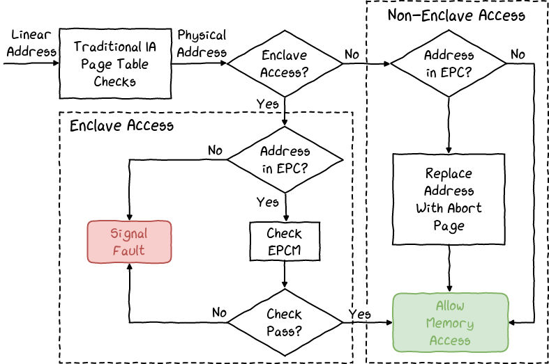
EPCM (Enclave Page Cache Map)
- EPCM不存储在EPC或PRM中，EPCM是一个硬件级的数据结构。存储在处理器的专用存储区域中（例如，处理器内部的寄存器或缓存中）
- EPCM在处理器内部，软件（ 包括Enclave代码 、操作系统）都无法直接访问。
- EPCM是一个硬件维护的表，用于记录EPC中每个页面的元数据（metadata）。
- 它跟踪EPC页面的分配状态、所属Enclave、页面类型（如代码页、数据页、TCS页等）以及访问权限。
EPCM结构体
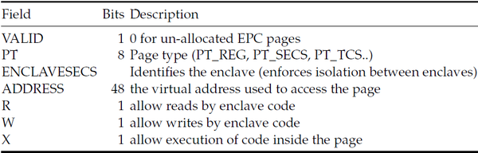
-
VALID：
- 标志页面是否已分配。
- 如果为
0，表示该页面未被分配。
-
PT（Page Type）：
-
指定页面的类型，例如：
PT_REG：普通数据或代码页面。PT_SECS：SECS页面。PT_TCS：线程控制结构（TCS）页面。
-
-
ENCLAVESECS：
- 标识页面所属的Enclave。
- 确保页面只能被其所属的Enclave访问，防止跨Enclave的非法访问。
-
ADDRESS：
- 页面对应的虚拟地址，用于访问该页面。
-
R/W/X（权限位）：
-
控制页面的访问权限：
R：允许Enclave代码读取页面。W：允许Enclave代码写入页面。X：允许在页面中执行代码。
-
单个PRM中只有一个EPC区域：
- PRM中的一部分被划分为EPC，用于存储Enclave的页面（代码和数据）。
- EPC是一个连续的内存区域，其大小由硬件和BIOS配置决定（通常是128MB，但可能更小或更大，具体取决于处理器型号和系统配置）。
- 换句话说，PRM中只有一个EPC区域，而不是多个EPC。
- 多个Enclave的页面会被分配到同一个EPC区域中，但硬件确保它们之间的隔离和安全性。(EPCM确保)
- 每个Enclave需要占用一定数量的EPC页面。如果EPC空间不足，系统可能会通过SGX的换页机制（paging）将部分EPC页面换出到普通内存中。
SECS (SGX Enclave Control Structure)
一个Enclave对应一个SECS
-
SECS的作用：
-
SECS是每个Enclave的核心元数据结构，存储了Enclave的关键信息，包括：
- 密码学测度（Measurement）：用于认证Enclave的完整性。
- Enclave的身份信息：如Enclave的创建参数、大小、属性等。
-
SECS是EPC中的一个页面，但它受到严格的硬件保护， 只有SGX硬件和微码可以访问和修改 。
-
-
安全性要求：
- 如果Enclave中的代码能够直接修改SECS中的数据（如密码学测度或身份信息），将破坏SGX的安全模型。
- 为此，SGX硬件通过EPCM中的权限控制字段，确保SECS页面只能由SGX硬件访问，而不能被Enclave代码或外部软件直接修改。
TCS (Thread Control Structure)
和SECS一样，不能被其他软件包括enclave中的代码本省修改。一个enclave至少有一个，因为它为多线程而生，所以也可以有多个。
The SGX design fully supports multi-core processors. It is possible for multiple logical processors to concurrently execute the same enclave’s code at the same time, via different threads.
The SGX implementation uses a Thread Control Structure (TCS) for each logical processor that executes an enclave’s code.
SSA(Save State Area)
一个TCS至少有有一个SSA用于在线程因为中断或者异常退出时保存状态，在恢复时从这里面读取状态。
Stack and Heap
有自己的堆栈
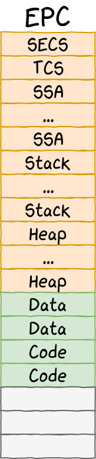
Intel SGX信任根与信任链建立过程
一、硬件信任根初始化
1. Intel SGX硬件密钥体系
-
基础密钥(Root Provisioning Key和Root Seal Key)在制造时烧录到熔丝(Fuse)中
-
采用密钥派生机制(Key Derivation)生成其他功能密钥:
- Provisioning Key: 用于远程认证
- Seal Key: 用于数据加密存储
- Report Key: 用于本地报告签名
- Launch Key: 用于Enclave启动控制
2. SGX硬件可信模块
- 测量引擎(Measurement Engine)
- 密钥派生引擎(Key Derivation Engine)
- 加密引擎(Encryption Engine)
- 签名验证引擎(Signature Verification Engine)
- 安全内存管理单元(Memory Management Unit)
二、Enclave创建与测量
1. Enclave代码准备
- 开发者提供Enclave代码、数据和属性定义
- 属性包括:XFRM、MODE(DEBUG/PRODUCTION)等
2. 硬件测量过程
- 逐页测量:
For each page:
1 | MRENCLAVE = SHA256_UPDATE(MRENCLAVE || PAGE_INFO || PAGE_CONTENT) |
-
页信息(PAGE_INFO)包含:
- 页类型(REG/TCS/SECS)
- 页属性(R/W/X权限)
- 加载偏移地址
-
最终生成256位的MRENCLAVE值
三、签名验证(SIGSTRUCT)
1. 开发者签名
- 使用2048位RSA密钥对生成SIGSTRUCT
- SIGSTRUCT包含:
1 | { |
2. MRSIGNER生成
- MRSIGNER = SHA256(RSA Public Key Modulus)
- 用于识别Enclave开发者身份
3. 硬件验证
- 验证RSA签名有效性
- 验证MRENCLAVE匹配
- 验证属性合法性
四、启动授权(EINITTOKEN)
1. Launch Enclave职责
- 实现Intel定义的启动控制策略
- 管理Enclave白名单
- 生成并签署EINITTOKEN
2. EINITTOKEN结构
1 | { |
3. 授权流程
- 验证请求者身份(MRSIGNER)
- 检查启动策略合规性
- 使用Launch Key生成MAC
- 打包EINITTOKEN
五、Enclave初始化(EINIT)
1. 硬件验证
- 验证EINITTOKEN的MAC
- 验证MRENCLAVE/MRSIGNER匹配
- 检查属性与策略符合性
2. 初始化过程
- 建立Enclave上下文
- 初始化TCS(Thread Control Structure)
- 设置内存访问权限
- 生成Enclave加密密钥
3. 信任链确立
- 硬件信任根 → 测量值 → 开发者签名 → 启动授权 → 运行时隔离
这样的修改更准确地描述了SGX的信任根和信任链建立过程,包含了关键的技术细节。您觉得还有需要补充或修改的地方吗?
防止不可信的OS地址映射攻击
OS会被视作不可信环境，需要防止恶意的OS修改VA到PA的映射。
-
The CPU performs the usual virtual-to-physical address translation using the page tables (controlled by the untrusted OS).
-
Once the physical address is determined, the CPU checks whether the physical address belongs to an EPC page by consulting the EPCM.
-
If the physical address is an EPC page, the CPU compares the virtual address being accessed with the expected virtual address stored in the EPCM entry for that EPC page.
- If the virtual address matches, the access is allowed.
- If the virtual address does not match, the CPU raises an exception, and the access is denied.
Enclave的调度
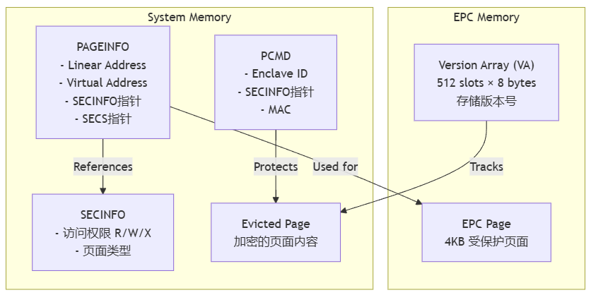
留给操作系统调度的指令
EPA - This instruction allocates a 4KB memory page that will contain the pages version number array (VA) to protect against replay. Each element is 64 bits long.
EBLOCK - This instruction blocks all accesses to the page being prepared for eviction. All future accesses to this page will result in a page fault (“page blocked”).
ETRACK - This instruction evicts a page from the EPC. The page must have been prepared properly: it must be blocked and must not be referenced by the TLB. Before writing it into the external memory, the page is encrypted, and a version number and meta-data are generated, and a final MAC is performed.
ELDB/ELDU - This instruction loads into memory a previously evicted page, in a blocked state or not. It checks the MAC of the meta-data, version number (from the corresponding VA entry), and the page encrypted content. If the verification succeeds, the page content is decrypted and placed inside the chosen EPC page, and the corresponding VA entry deleted.
Enclave的创建
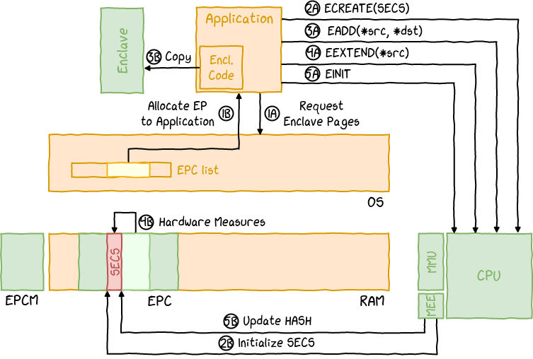
Enclave的进入和退出
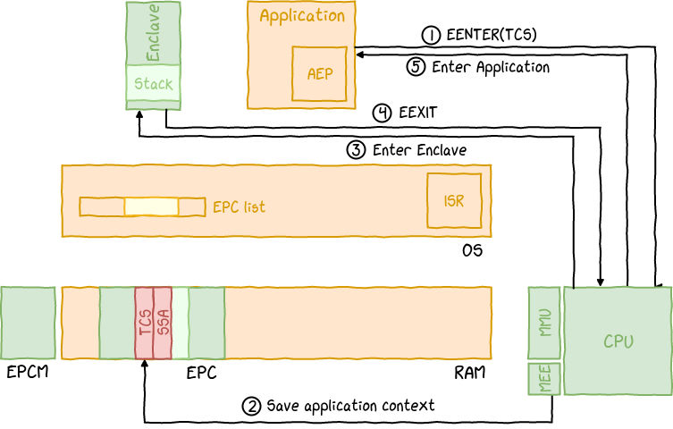
Enclave中断和恢复
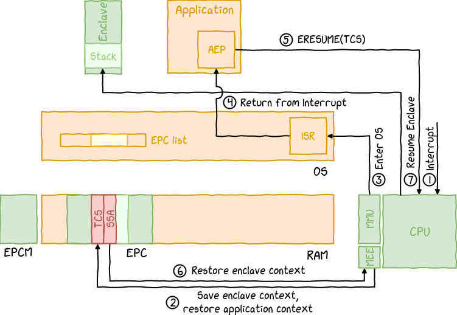
Intel SGX的原生支持缺陷
SGX 的原生接口（如 ECALL 和 OCALL）非常底层，无法直接支持复杂的 OS 抽象。例如，线程管理、同步原语和动态线程创建在 SGX 中没有直接支持。
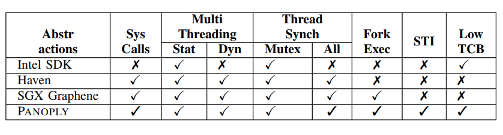
也不支持enclave之间通信。
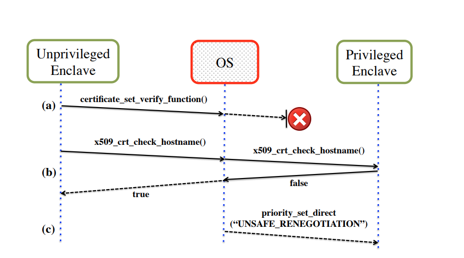
参考
https://lingering.github.io/2020/06/18/SGX-基本原理/
https://blog.quarkslab.com/overview-of-intel-sgx-part-1-sgx-internals.html
https://blog.quarkslab.com/overview-of-intel-sgx-part-2-sgx-externals.html
https://www.ndss-symposium.org/wp-content/uploads/2017/09/ndss2017_07-5_Shinde_paper.pdf
Intel SGX（Software Guard Extensions）速记
https://cl0und.xyz/2024/12/01/Intel-SGX（Software-Guard-Extensions）速记/